Lat Pulldown
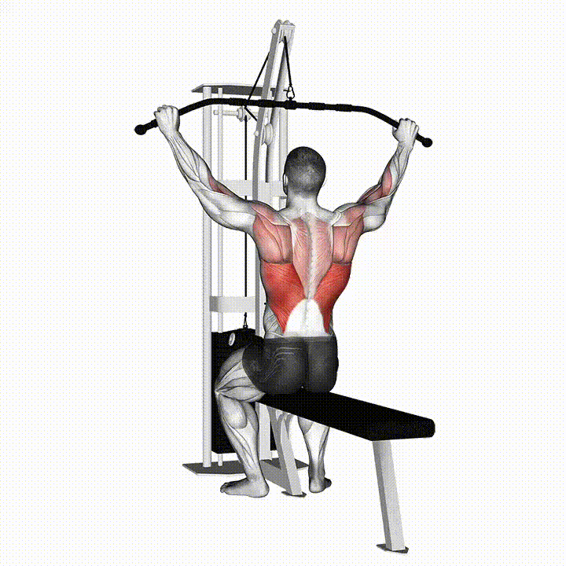Oturun ve dirsekleriniz hafifçe bükülü olacak şekilde kulpları kavrayın. Ardından barı çenenizin hemen altına gelene kadar aşağı çekin. Aşağıda latissimus dorsi (sırt geniş) kaslarınızı sıkın.
Lat Pulldown Behind The Neck
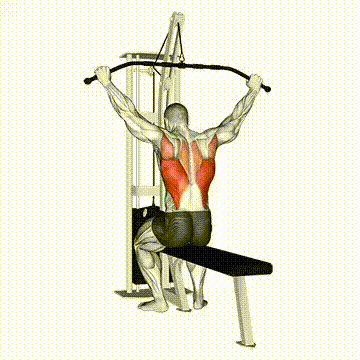Barı geniş tutarak kulpları kavrayın ve oturun. Dirseklerinizi hafifçe bükerek barı başınızın arkasına, ense hizasına doğru yavaşça çekin. Hareketin alt noktasında lat kaslarınızı sıkarak hareketi tamamlayın, ardından kontrollü şekilde başlangıç pozisyonuna dönün.
Back Row

Ayaklarınızı dayayın, hafif öne eğilin ve kollarınız düzken kulpu kavrayın. Kulpu karnınıza doğru çekerken kürek kemiklerinizi sıkın. Sonra kontrollü indirin.
Lying Chest Fly
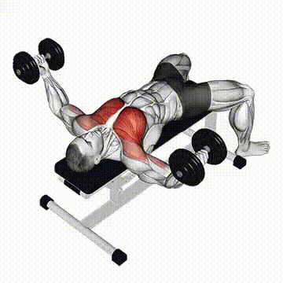Düz bir bench’e sırtüstü uzanın ve her iki elinize birer dambıl alın. Kollarınızı yukarı doğru uzatın ve dirseklerinizi hafifçe bükün. Kollarınızı yavaşça yanlara doğru açarak göğsünüzde esneme hissedene kadar indirin. Daha sonra göğüs kaslarınızı sıkarak dambılları kontrollü bir şekilde başlangıç pozisyonuna geri getirin.
Chest Dumbbell Press

Sırtınızı bench'e yaslayarak oturun ve dambılları omuz hizasında tutun. Dirsekleriniz hafifçe bükülü olacak şekilde dambılları yukarı doğru itin. Üst noktada göğüs kaslarınızı sıkarak hareketi tamamlayın ve kontrollü şekilde başlangıç pozisyonuna dönün.
Chest Butterfly
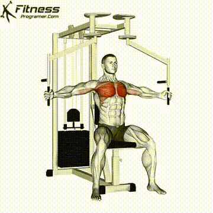Makineye oturun ve sırtınızı tamamen yaslayın. Dirsekleriniz hafifçe bükülü olacak şekilde kollarınızı makinenin kollarına yerleştirin. Kollarınızı önde birleştirerek göğüs kaslarınızı sıkın. Hareketin sonunda kısa bir süre kasılmayı hissedin, ardından kontrollü bir şekilde başlangıç pozisyonuna dönün.
Triceps Dips

Ellerinizi omuz genişliğinde bir dip sehpasına yerleştirin, ayaklarınızı öne doğru uzatın. Dirseklerinizi bükerek kalçanızı yavaşça aşağı indirin, omuzlarınız dirsek seviyesine geldiğinde durun. Ardından triceps kaslarınızı kullanarak tekrar yukarı itin.
Triceps Pushdown-Ropes
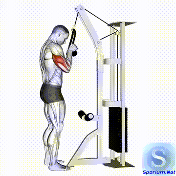Triceps barını kavrayarak düz durun, dirsekleriniz vücudunuza yakın olsun. Dirsek pozisyonunu bozmadan barı aşağı doğru itin. Kollar tamamen açıldığında triceps kaslarınızı sıkarak hareketi tamamlayın ve barı kontrollü şekilde yukarı getirin.
Z-Bar Curl
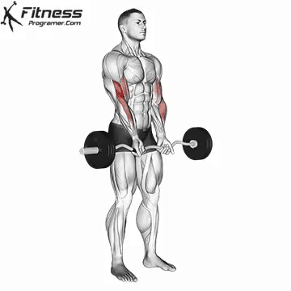Oturun ve dirsekleriniz hafifçe bükülü olacak şekilde kulpları kavrayın. Ardından barı çenenizin hemen altına gelene kadar aşağı çekin. Aşağıda latissimus dorsi (sırt geniş) kaslarınızı sıkın.
Shoulder Dumbbell Press
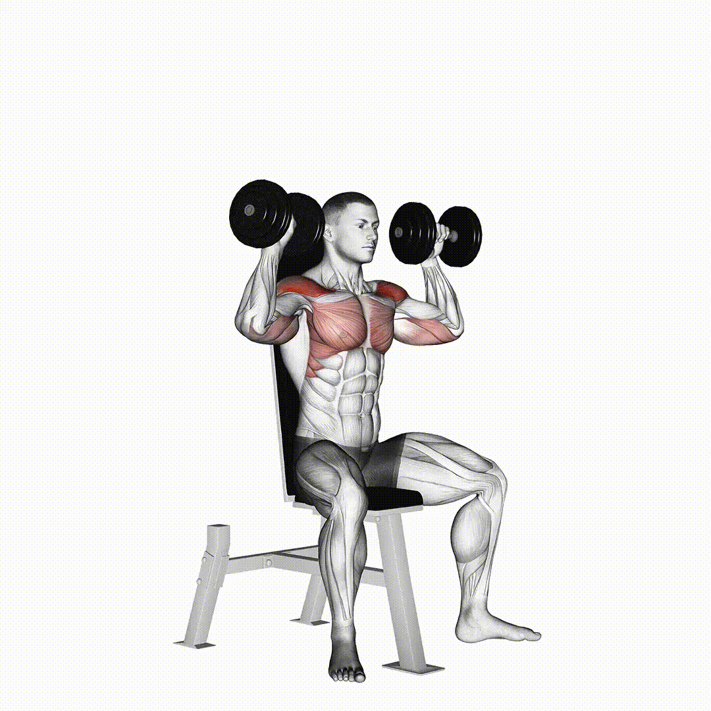Oturun ve dirsekleriniz hafifçe bükülü olacak şekilde kulpları kavrayın. Ardından barı çenenizin hemen altına gelene kadar aşağı çekin. Aşağıda latissimus dorsi (sırt geniş) kaslarınızı sıkın.
Frontal Raises
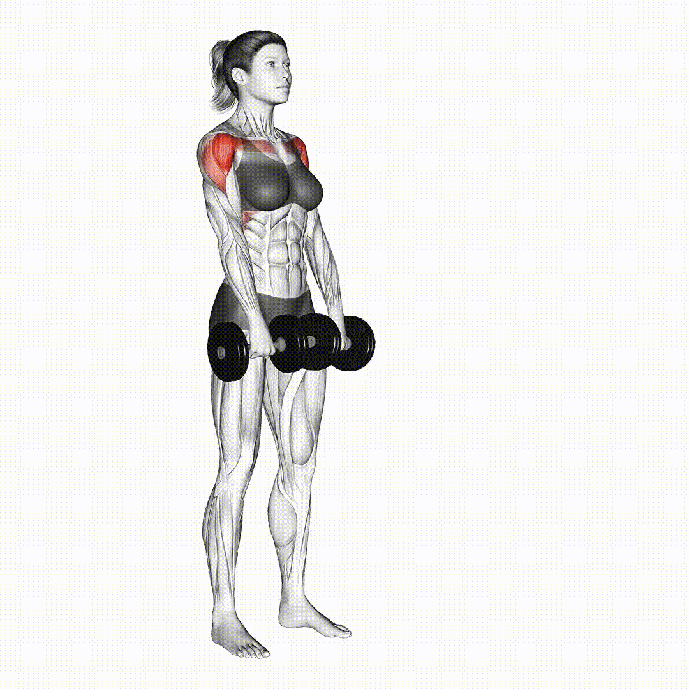Oturun ve dirsekleriniz hafifçe bükülü olacak şekilde kulpları kavrayın. Ardından barı çenenizin hemen altına gelene kadar aşağı çekin. Aşağıda latissimus dorsi (sırt geniş) kaslarınızı sıkın.
Lateral Rises
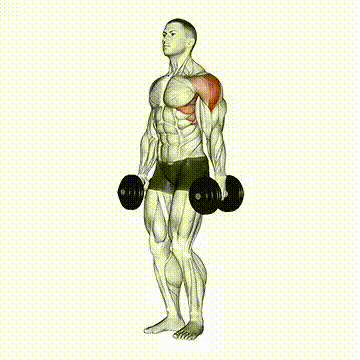Oturun ve dirsekleriniz hafifçe bükülü olacak şekilde kulpları kavrayın. Ardından barı çenenizin hemen altına gelene kadar aşağı çekin. Aşağıda latissimus dorsi (sırt geniş) kaslarınızı sıkın.
Rear Delt Fly
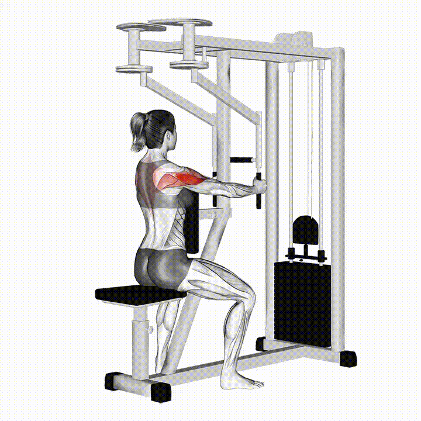Oturun ve dirsekleriniz hafifçe bükülü olacak şekilde kulpları kavrayın. Ardından barı çenenizin hemen altına gelene kadar aşağı çekin. Aşağıda latissimus dorsi (sırt geniş) kaslarınızı sıkın.
Leg Extension
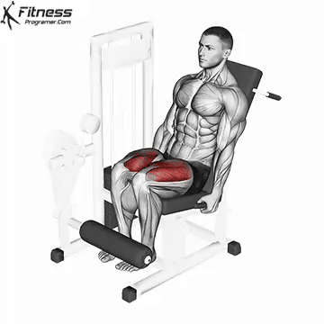Oturun ve dirsekleriniz hafifçe bükülü olacak şekilde kulpları kavrayın. Ardından barı çenenizin hemen altına gelene kadar aşağı çekin. Aşağıda latissimus dorsi (sırt geniş) kaslarınızı sıkın.
Bulgarian Split Squat

Oturun ve dirsekleriniz hafifçe bükülü olacak şekilde kulpları kavrayın. Ardından barı çenenizin hemen altına gelene kadar aşağı çekin. Aşağıda latissimus dorsi (sırt geniş) kaslarınızı sıkın.
Pile Squat
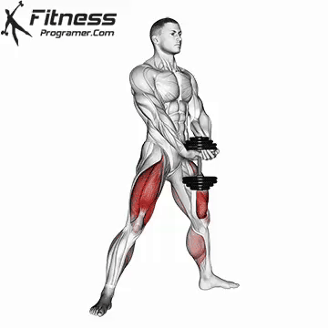Oturun ve dirsekleriniz hafifçe bükülü olacak şekilde kulpları kavrayın. Ardından barı çenenizin hemen altına gelene kadar aşağı çekin. Aşağıda latissimus dorsi (sırt geniş) kaslarınızı sıkın.
Lying Hamstring Curl

Oturun ve dirsekleriniz hafifçe bükülü olacak şekilde kulpları kavrayın. Ardından barı çenenizin hemen altına gelene kadar aşağı çekin. Aşağıda latissimus dorsi (sırt geniş) kaslarınızı sıkın.
Leg Press
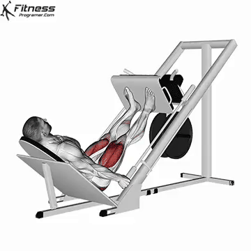Oturun ve dirsekleriniz hafifçe bükülü olacak şekilde kulpları kavrayın. Ardından barı çenenizin hemen altına gelene kadar aşağı çekin. Aşağıda latissimus dorsi (sırt geniş) kaslarınızı sıkın.
Squat

Oturun ve dirsekleriniz hafifçe bükülü olacak şekilde kulpları kavrayın. Ardından barı çenenizin hemen altına gelene kadar aşağı çekin. Aşağıda latissimus dorsi (sırt geniş) kaslarınızı sıkın.
RDL

Oturun ve dirsekleriniz hafifçe bükülü olacak şekilde kulpları kavrayın. Ardından barı çenenizin hemen altına gelene kadar aşağı çekin. Aşağıda latissimus dorsi (sırt geniş) kaslarınızı sıkın.
Sumo Squat

Oturun ve dirsekleriniz hafifçe bükülü olacak şekilde kulpları kavrayın. Ardından barı çenenizin hemen altına gelene kadar aşağı çekin. Aşağıda latissimus dorsi (sırt geniş) kaslarınızı sıkın.
Seated Hamstring Curl

Oturun ve dirsekleriniz hafifçe bükülü olacak şekilde kulpları kavrayın. Ardından barı çenenizin hemen altına gelene kadar aşağı çekin. Aşağıda latissimus dorsi (sırt geniş) kaslarınızı sıkın.
Leg Abduction
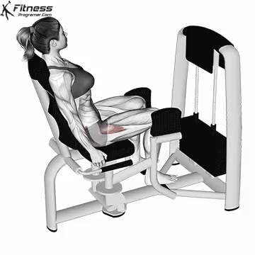Oturun ve dirsekleriniz hafifçe bükülü olacak şekilde kulpları kavrayın. Ardından barı çenenizin hemen altına gelene kadar aşağı çekin. Aşağıda latissimus dorsi (sırt geniş) kaslarınızı sıkın.
Leg Adduction
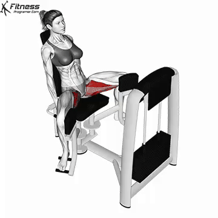Oturun ve dirsekleriniz hafifçe bükülü olacak şekilde kulpları kavrayın. Ardından barı çenenizin hemen altına gelene kadar aşağı çekin. Aşağıda latissimus dorsi (sırt geniş) kaslarınızı sıkın.
Hip Thrust
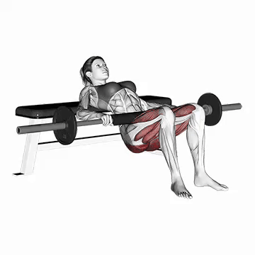Oturun ve dirsekleriniz hafifçe bükülü olacak şekilde kulpları kavrayın. Ardından barı çenenizin hemen altına gelene kadar aşağı çekin. Aşağıda latissimus dorsi (sırt geniş) kaslarınızı sıkın.
Seated Bench Leg Pull-In
Oturun ve dirsekleriniz hafifçe bükülü olacak şekilde kulpları kavrayın. Ardından barı çenenizin hemen altına gelene kadar aşağı çekin. Aşağıda latissimus dorsi (sırt geniş) kaslarınızı sıkın.